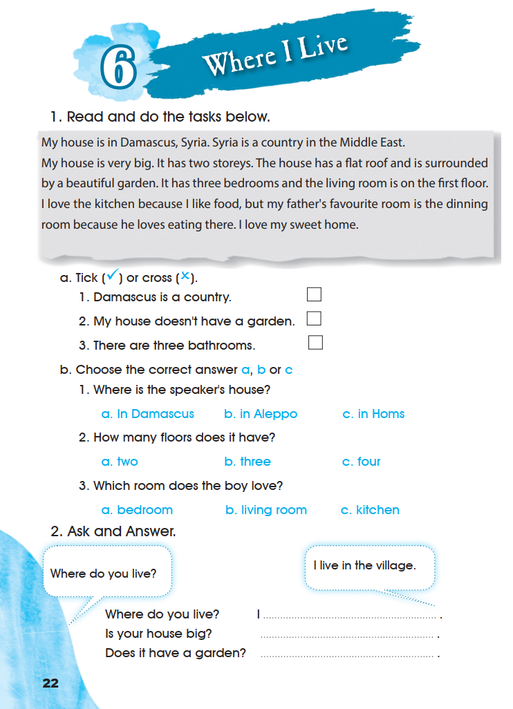
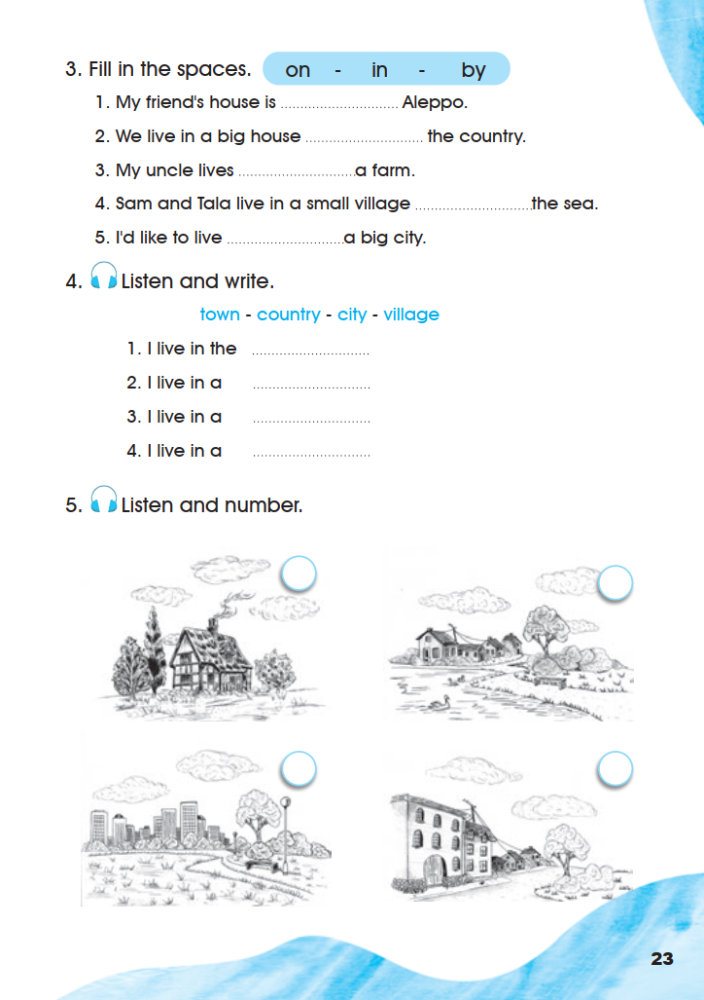
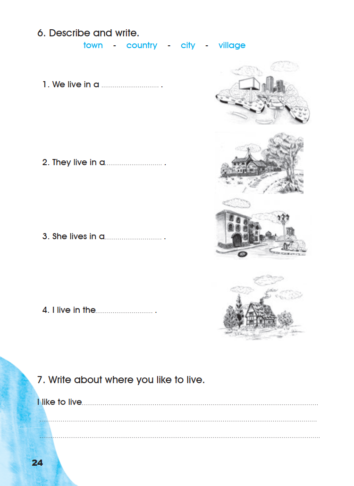

Workbook
Where I Live · pages 22–24. The complete original source scans below preserve printed content and layout.
Workbook · page 22
Original source scan 15, preserved byte-for-byte. This page includes all visible exercises, directions, examples and illustrations exactly as supplied.

Accessible text transcription · page 22
1. Read and do the tasks below.
My house is in Damascus, Syria. Syria is a country in the Middle East. My house is very big. It has two storeys. The house has a flat roof and is surrounded by a beautiful garden. It has three bedrooms and the living room is on the first floor. I love the kitchen because I like food, but my father’s favourite room is the dining room because he loves eating there. I love my sweet home.
a. Tick ✓ or cross ✗.
1. Damascus is a country.
2. My house doesn’t have a garden.
3. There are three bathrooms.
b. Choose the correct answer a, b or c.
1. Where is the speaker’s house? a. In Damascus · b. in Aleppo · c. in Homs
2. How many floors does it have? a. two · b. three · c. four
3. Which room does the boy love? a. bedroom · b. living room · c. kitchen
2. Ask and answer.
Where do you live? · Is your house big? · Does it have a garden?The complete untouched scan above remains the reference for its illustrations, alignment, tick boxes and picture matching. No missing listening transcript or answer is inferred.
Image provenance and source details
Upload image 15; allocated only to Lesson 6 Workbook; source page 22. SHA-256 is recorded in the source manifest.
Open original scanWorkbook · page 23
Original source scan 16, preserved byte-for-byte. This page includes all visible exercises, directions, examples and illustrations exactly as supplied.

Accessible text transcription · page 23
3. Fill in the spaces. on – in – by
1. My friend’s house is … Aleppo.
2. We live in a big house … the country.
3. My uncle lives … a farm.
4. Sam and Tala live in a small village … the sea.
5. I’d like to live … a big city.
4. Listen and write. town · country · city · village
1. I live in the …
2. I live in a …
3. I live in a …
4. I live in a …
5. Listen and number. Four landscape pictures with blank number circles are shown. The audio was not supplied.The complete untouched scan above remains the reference for its illustrations, alignment, tick boxes and picture matching. No missing listening transcript or answer is inferred.
Image provenance and source details
Upload image 16; allocated only to Lesson 6 Workbook; source page 23. SHA-256 is recorded in the source manifest.
Open original scanAudio limitation: the printed listening task is visible in the scan, but its recording and transcript were not supplied. No listening answers are invented.
Workbook · page 24
Original source scan 17, preserved byte-for-byte. This page includes all visible exercises, directions, examples and illustrations exactly as supplied.

Accessible text transcription · page 24
6. Describe and write.
town · country · city · village
1. We live in a …
2. They live in a …
3. She lives in a …
4. I live in the …
7. Write about where you like to live.
I like to live …The complete untouched scan above remains the reference for its illustrations, alignment, tick boxes and picture matching. No missing listening transcript or answer is inferred.
Image provenance and source details
Upload image 17; allocated only to Lesson 6 Workbook; source page 24. SHA-256 is recorded in the source manifest.
Open original scanPersonal practice drafts are saved in this browser; source scans remain unchanged.